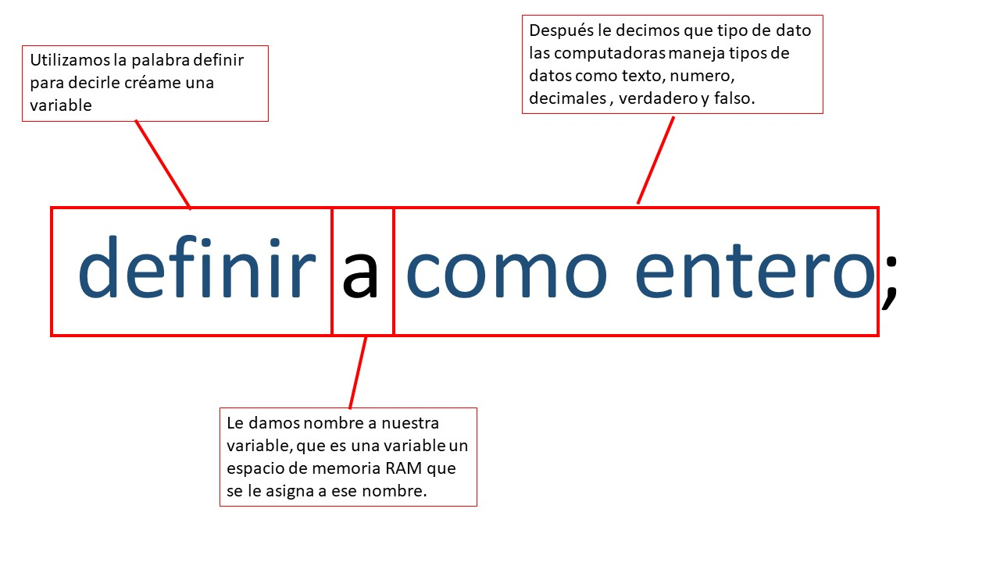

Variables y tipos de datos.
Que es una Variable.
Es un espacio de memoria RAM que se le asigna cuando se define, tambíen maneja tipos de datos como texto, numero, decimales , verdadero y falso.

Tipos de Datos.
definir a como numero: Maneja solo números ,pero sin decimales es decir entero como 9,4,5,6,3,-2,-1000,5,-8.
definir b como real: Maneja número no solo entero sino que también decimales como 5,6,7,80,5.555,6.667,8.9,926.6566,0.555.
definir c como caracter: Maneja solo un carácter a que se refiere con carácter cualquier signo, letra, numero pero solo como por ejemplo a,5,f,$,&.
definir d como texto: Maneja cadenas de caracteres es decir dos o más caracteres unidos como nuestro nombre, hola, la.
definir e como logico: Maneja solo dos tipos de datos verdaderos y falsos pero solo maneja esa palabras.
Ejemplo de como se define